``You may be right. I don't mind if I make mistakes. It may be that in one
of the blind alleys I may find something to my purpose.''
from The Razor's Edge by W. Somerset Maugham
Instructions: Show all work to receive full or partial credit. You may use
a scientific
calculator/graphing calculator. All University rules and guidelines for
student conduct are applicable.
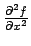
and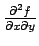
.
These calculations are straightforward applications of the chain rule and
the product rule.
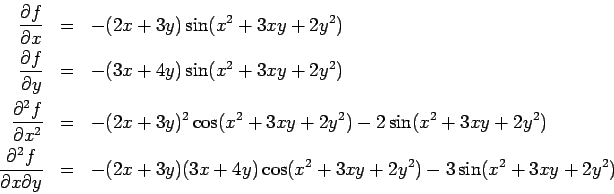
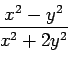
Here it suffices to find two parametric paths to the origin which
approach different limits. It is not enough to observe that the limit
of the expression above is an indeterminant form. Many continuous limits
are indeterminant forms. (For instance, all derivatives are indeterminant
forms.)
The easiest limits to study follow the coordinate axes. So you could try
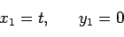
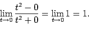
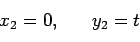
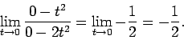
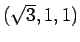
. Sketch the surface and the tangent plane. (Be sure to clearly label the x, y and z axes.)
Since a point on the plane is already supplied in the question, one
just needs to find the normal vector to the plane. Since the surface is
expressed as a level set, the gradient will be a normal vector.
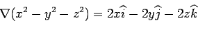
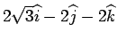
is a normal vector. Notice that any scalar multiple of this vector is also a normal vector to the plane. Thus, an equation for the tangent plane would be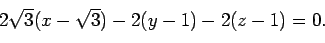
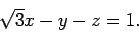
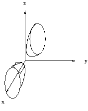
This problem was relatively simple. Some students found it deceptively so.
I offer no apologies for this, and I ask that you have confidence in your
knowledge of mathematics so that you can find a solution and know that it is
true.
To find the critical points, one must find all points (x,y) such that
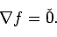
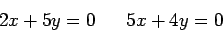
Here, we use Lagrange multipliers.
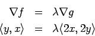
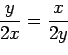
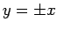
. Substituting this back into the constraint, one finds four solutions: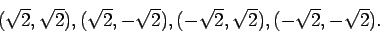